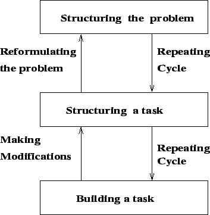

Next: Key Similarities
Up: Conventional Vs KM Systems
Previous: Conventional Vs KM Systems
Contents
- The systems analyst gathers data and information from the users
and the users depend on analysts for the solution.
- The knowledge developer gathers knowledge from people with known
knowledge and the developer depends on them for the solution.
- The main interface for the systems analyst is associated with novice
users who knows the problem but not the solution.
- The main interface for the knowledge developer is associated with
the knowledgeable person who knows the problem and the solution.
- Conventional systems development is primarily sequential, whereas
KMSLC is incremental and interactive.
- In case of conventional systems, testing is usually done towards
the end of the cycle (after the system has been built), whereas
in KMSLC, the evolving system is verified and validated
from the beginning of the cycle.
- Systems development and systems management is much more extensive for
conventional information systems than it is for KMSLC.
- The conventional systems life cycle is usually process-driven and
documentation-oriented whereas KMSLC is result-oriented.
- The conventional systems development does not support tools such as
rapid prototyping since it follows a predefined sequence of steps
- KMSLC can use rapid prototyping incorporating changes on the spot.
Figure 2.1:
Rapid Prototyping
|

|
Next: Key Similarities
Up: Conventional Vs KM Systems
Previous: Conventional Vs KM Systems
Contents
Knowledge Management Systems
2004-11-01